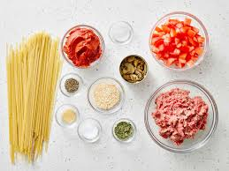
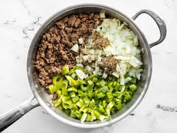
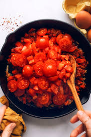
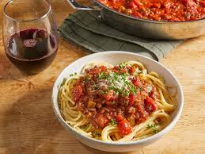

Spaghetti (Italian: [spaˈɡetti]) is a long, thin, solid, cylindrical pasta.[1] It is a staple food of traditional Italian cuisine.[2] Like other pasta, spaghetti is made of milled wheat, water, and sometimes enriched with vitamins and minerals. Italian spaghetti is typically made from durum-wheat semolina.[3] Usually the pasta is white because refined flour is used, but whole wheat flour may be added.[4] Spaghettoni is a thicker form of spaghetti, while spaghettini is a thinner form. Capellini is a very thin spaghetti, while vermicelli refers to intermediate thicknesses.
Step 1
Gather all ingredients
Step 2
Combineground beef, onion, garlic, and green pepper in a large saucepan over medium-high heat. Cook and stir until meat is browned and crumbly and vegetables are tender, 5 to 7 minutes. Drain grease.
Step 3
Stir diced tomatoes, tomato sauce, and tomato paste into the pan. Season with oregano, basil, salt, and pepper. Simmer spaghetti sauce for 1 hour, stirring occasionally.
Step 4
Serve hot and enjoy!
